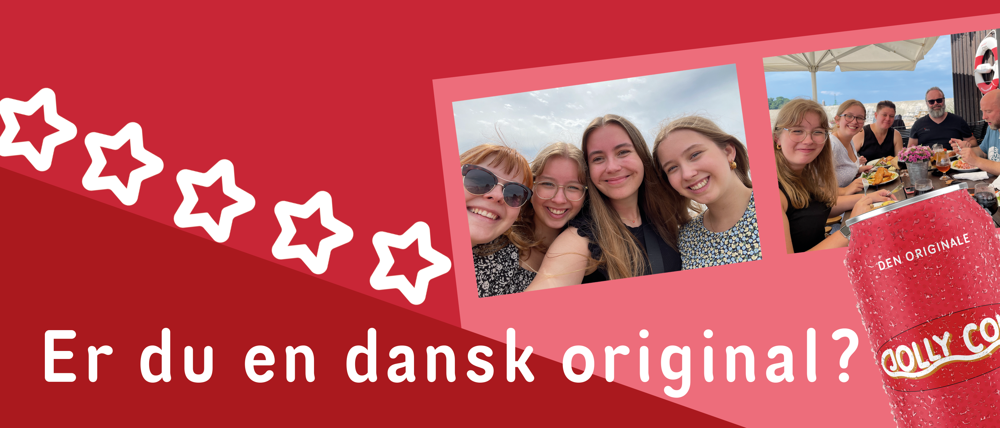

Konkurrencer
Læs alt om vores igangværende og afsluttede konkurrencer og kampagner. Vi har næsten altid gang i noget!
En dansk original
Vi har alle dage været stolte af at repræsentere danskerne som et af de førende danske sodavandsbrands. I den forbindelse har vi igangsat en konkurrence der netop omhandler den danske stolthedsfølelse!

Har du et ønske om, at der altid står en iskold Jolly Cola i dit køleskab? Drøm ej videre for her finder du måske løsningen!
Nu har du nemlig muligheden for at vinde et helt års forbrug af Danmarks bedste sodavand! Det er ganske enkelt at være med.
Det eneste du skal gøre er at uploade dit yndlings danske øjeblik fra 2021. Har du besøgt nogle smukke strande, haft picnic i regnvejr, cyklet Samsø rundt eller måske noget helt fjerde?
Så upload det til Instagram, Facebook eller Twitter med hashtagget #Jolly2021 og så har du chancen for at være den heldige indehaver af et års forbrug af Jolly Cola!
Ydermere har du, når du uploader, en chance for at blive postet på vores sociale medier, hvor vi stolt vil dele dine bedste øjeblikke! Så hvad venter du på? Post amok!
For konkurrencebetingelser og yderligere vilkår klik
her.
Tidligere konkurrencer
Jolly Sommer
Som alle efterhånden ved fylder Corona meget i vores alles hverdag. Dette gjorde os at mange danskere fik en lidt anderledes sommer end vi plejer. Da mange danskere måtte spendere deres sommerferie i det danske istedet for de varme lande, ville vi gøre deres sommer bare lidt mere Jolly. Vi opsatte derfor boder rundt omkring i det danske sommerlandsskab bl.a. i Aarhus, København og Odense. Her var det muligt at slukke tørsten med en iskold Jolly Cola. Der var gratis læskedrikke til alle der samlede en 1-liters pose med affald så vi på samme tid kan holde vores højtelskede land rent! Der er dog altid de lidt mere ambitiøse affaldssamlere. Disse menensker ville vi også gøre noget godt for, så hver eneste dag lagde vi en Jolly Cola T-shirt på højkant, til dem der samlede mest skrald. Vi endte i alt med at give 200 T-shirts ud til de Jolly glade danskere rundt omkring i hele det danske land! Hvis du er ked af du gik glip af chancen for den fedeste T-shirt på markedet, kan du stadig købe den i vores shop!